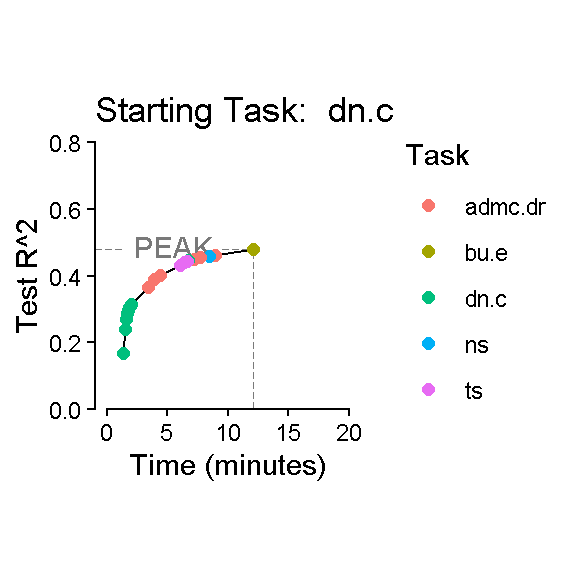
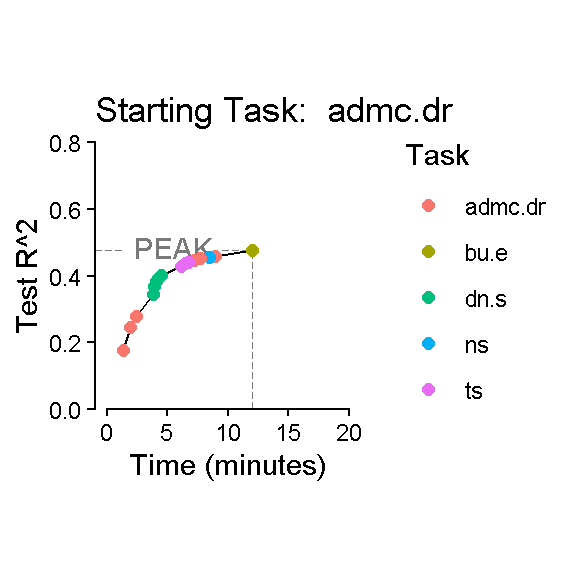
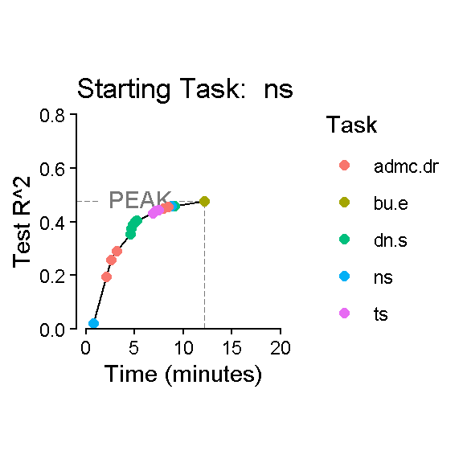
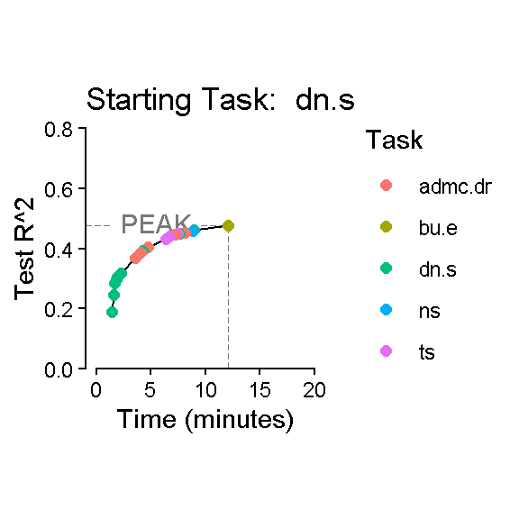
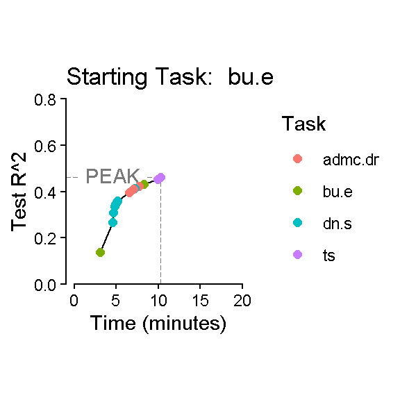
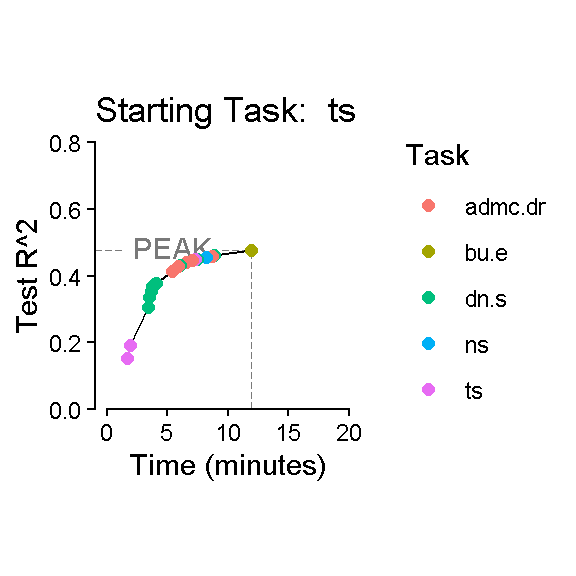
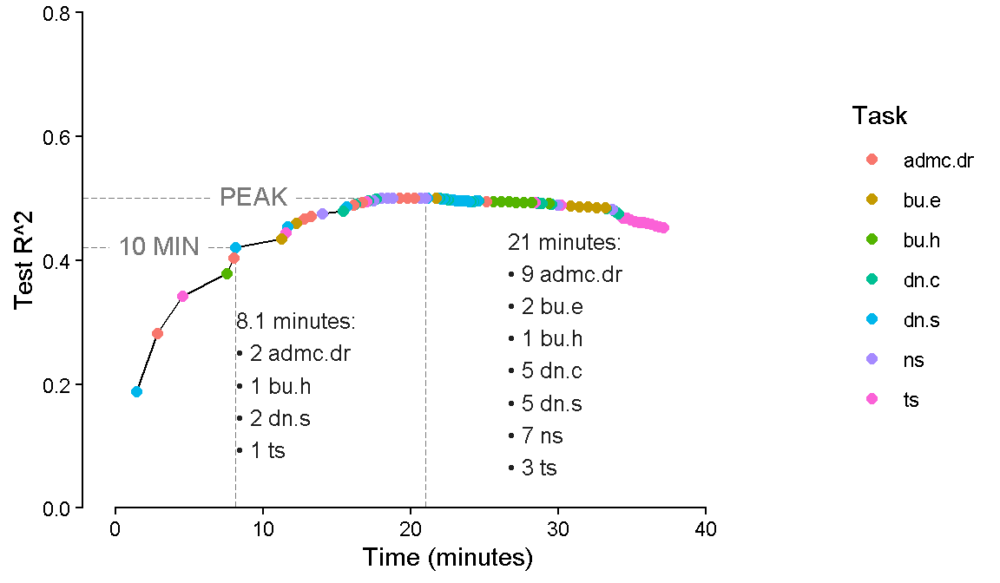

Code
library(tidyverse)Search Algorithm
library(tidyverse)dn_dat_c <- readRDS(here::here("Data", "Denominator Neglect", "dn_dat_c.rds"))
bu_dat_h <- readRDS(here::here("Data", "Bayesian Update", "bu_dat_h.rds"))
admc.dr_dat <- readRDS(here::here("Data", "ADMC Decision Rules", "admc.dr_dat.rds"))
ns_dat <- readRDS(here::here("Data", "Number Series", "ns_dat.rds"))
dn_dat_s <- readRDS(here::here("Data", "Denominator Neglect", "dn_dat_s.rds"))
bu_dat_e <- readRDS(here::here("Data", "Bayesian Update", "bu_dat_e.rds"))
ts_dat <- readRDS(here::here("Data", "Time Series", "ts_dat.rds"))
dn_top_items_c <- readRDS(here::here("Data", "Denominator Neglect", "top_items.rds"))
dn_top_items_s <- readRDS(here::here("Data", "Denominator Neglect", "top_items_s.rds"))
startup_costs <- readRDS(here::here("Data", "startup_costs.rds"))get_startup <- function(input_task) {
startup_costs |>
filter(task == input_task) |>
pull(startup)
}dn_dat_c <- dn_dat_c |>
left_join(dn_top_items_c |>
pivot_longer(c(conf_item, harm_item),
names_to = "choice_type", values_to = "item") |>
select(item, rank),
by = "item") |>
mutate(task = "dn.c",
item = paste0(task, "_", rank),
# still need time per item
time = (3.43 - get_startup(first(task))) /
(length(unique(item)) * 2),
score = correct,
.keep = "unused") |>
select(subject_id, sscore, task, item, score, time)
dn_dat_s <- dn_dat_s |>
left_join(dn_top_items_s |>
pivot_longer(c(conf_item, harm_item),
names_to = "choice_type", values_to = "item") |>
select(item, rank),
by = "item") |>
mutate(task = "dn.s",
item = paste0(task, "_", rank),
# still need time per item
time = (4.45 - get_startup(first(task))) /
(length(unique(item)) * 2),
score = correct,
.keep = "unused") |>
select(subject_id, sscore, task, item, score, time)bu_dat_h <- bu_dat_h |>
mutate(task = "bu.h",
item = paste0(task, "_", unique_trial),
time = (6.56 - get_startup(first(task))) /
(length(unique(item))),
.keep = "unused") |>
select(subject_id, sscore, task, item, score, time)
bu_dat_e <- bu_dat_e |>
mutate(task = "bu.e",
item = paste0(task, "_", unique_trial),
time = (7.26 - get_startup(first(task))) /
(length(unique(item))),
.keep = "unused") |>
select(subject_id, sscore, task, item, score, time)admc.dr_dat <- admc.dr_dat |>
mutate(task = "admc.dr",
item = paste0(task, "_", parse_number(admc_id)),
time = (5.87 - get_startup(first(task))) /
(length(unique(item))),
.keep = "unused") |>
select(subject_id, sscore, task, item, score, time)ns_dat <- ns_dat |>
mutate(task = "ns",
item = paste0(task, "_", parse_number(ns_id)),
time = (3.70 - get_startup(first(task))) /
(length(unique(item))),
.keep = "unused") |>
select(subject_id, sscore, task, item, score, time)ts_dat <- ts_dat |>
mutate(task = "ts",
item = paste0(task, "_", ts_id),
time = (5.83 - get_startup(first(task))) /
(length(unique(item))),
.keep = "unused") |>
select(subject_id, sscore, task, item, score, time)v5_dat <- rbind(dn_dat_c,
bu_dat_h,
admc.dr_dat,
ns_dat,
dn_dat_s,
bu_dat_e,
ts_dat)
v5_dat |>
filter(is.na(score)) |>
summarize(.by = c(subject_id, task),
n = n()) subject_id task n
1 Ac5ZMy5LVkFjQHr2ucen dn.c 1
2 xerEAhCM3QCii740dMOT dn.c 1
3 nmy4BvIJvHgW6RKgnx5i dn.c 1
4 e8cXE9s9upZtFqszDShQ dn.c 2
5 SstzyshA6P3MsHarAJOC dn.c 1
6 R0BAq19ThveXTuFrNFWR dn.c 1
7 v8OOr4HHwaTU8MdlBiNe dn.c 48
8 fkOJ1NbnRk71F9aGqXWl dn.c 48
9 J97ljhO3gdtigy2V3olp dn.c 48
10 gAL0DiMvJc0jSvoR8Baq dn.c 48
11 LSSNI9CJdMEB7kIIdv1j dn.c 1
12 Opi65eyMrbyYjB5bwRMP dn.c 1
13 PPoF7VmcJfI5PN9okf0T dn.c 1
14 YV20vaAnaPndIGbTNCyi dn.c 48
15 FqMdeNMqacNOMwDGxovJ dn.c 1
16 L431K0ZDgV4wqUR7XTeo dn.c 1
17 A8SHBz2S8Ui095L35Wjh dn.c 48
18 1h05DmzN29B6FZZR67pP dn.c 1
19 BpXGyUgvqzapjyMB15Zy dn.c 48
20 CNX9AP2rnXxONuGYEalT dn.c 12
21 6jOSL0IZbcNJOVzNEMr7 dn.c 1
22 Xf5wK1xsRt5nKLDYQwop dn.c 1
23 xSvzfB9wIjnw2QuEb9Ba dn.c 2
24 4rY5i0hQ8qKc3mBAnAwT dn.c 9
25 E3hK4Etw5ylsn1SsXH8S dn.c 48
26 0WgPYP5L2MNMyFtsWEaG dn.c 1
27 QLyEuiyGskZKXWMVQm4M dn.c 1
28 DRrgI3jzHMjID8Q48PjB dn.c 48
29 Y2lFlepXHqWUFbEKCNwq dn.c 1
30 xDJ0JpfeWhke1GvUwHem dn.c 48
31 j49ae9H3AT6mRC6ygqv8 dn.c 48
32 YxsciWh4LBDtAl6lLunN dn.c 48
33 ifcG7cR8IYUd48e11ERX dn.c 6
34 hf6J6yzRivfwR2Elyo9N dn.c 2
35 0REiwYHX47zX4qbePYjN dn.c 1
36 SNsBrz8Txh3QpNgGXGtE dn.c 1
37 1E9KZrTTpuJ3KjJa8cDV dn.c 6
38 fRYcCiEcUwRJIA0mQ2o7 dn.c 48
39 tRvesqPE5A0iKVY6G8g8 dn.c 48
40 VwvZLU4OilnAvOArxYc7 dn.c 1
41 DXeOGqQEgoEt16VOuaOn bu.h 2
42 Ac5ZMy5LVkFjQHr2ucen bu.h 4
43 HqfnXYULelL4tEtMA05t bu.h 2
44 CPwdHnAnqZuJJEvQdgWC bu.h 1
45 G06vCKjuln4m6u6CPQEn bu.h 1
46 ZP9yL6PFVQSvSIC7bUee bu.h 1
47 R6U0YqqdHfgqkWkuCagF bu.h 1
48 2t8eqhwiUfiSDnWfoHBW bu.h 1
49 fkOJ1NbnRk71F9aGqXWl bu.h 2
50 V2ME98SReEaOQ3fhFVst bu.h 1
51 950AzNMugIUFBNRmlDCF bu.h 3
52 kiTl14IWGtRXdVVJmZgD bu.h 1
53 ADb2b1AvtBmftDmWdKWN bu.h 2
54 vbGZVDJU7u0ApalOtBTF bu.h 1
55 EECGDwmWAmWfpKKnYI7O bu.h 1
56 XjY03SGFqyp7HmUABJbW bu.h 1
57 vw9RHgQ3UaaTe1nfjJc0 bu.h 2
58 IeElhKAlZlvb0pPCNyJQ bu.h 1
59 HngYolsZ7LnwhMepx4yf bu.h 1
60 383KleAMN0hXjU1qXdYJ bu.h 1
61 CKbheN9Pot7GaZpfPYe5 bu.h 1
62 BpXGyUgvqzapjyMB15Zy bu.h 1
63 DoFCE00qFvG0xBr3UWpI bu.h 1
64 zANbOJqdtyEpAq00umSb bu.h 5
65 IJumhtN8oKoYEDbFfUMf bu.h 1
66 j5bxfVlajJwn5pZNQQsa bu.h 1
67 TqSddjjditUnblQcWfB3 bu.h 2
68 Hy5g7Y3sJf9BcHPqEZ8p bu.h 1
69 2QJZGGcIQF8A5FhBmyuz bu.h 1
70 OJ5jre57VnjtURyBCSjz bu.h 1
71 mXMCaULEkFF6s1prItB8 bu.h 1
72 771cxdbg1Rw25ZLqI3Ge bu.h 2
73 49bWZY1TC7zcMYq4FzkX bu.h 1
74 4rY5i0hQ8qKc3mBAnAwT bu.h 2
75 ItLyRC07hxMbcaguQBkl bu.h 1
76 A7wLmahMacmd6RniSE0h bu.h 1
77 cU37HwPJT7ClWoOdeIB0 bu.h 1
78 0WgPYP5L2MNMyFtsWEaG bu.h 1
79 Cxv3OL9bAloZXz0mUogg bu.h 1
80 5FK6Vbwq2sUGNtVEgaFU bu.h 1
81 fCMnEWhTh7kuGhOSMhTC bu.h 2
82 kEsM4qtWu3c24cxLGja3 bu.h 1
83 mgLxjjWNdkpi3rxUB07l bu.h 2
84 17LEM8wPQyshaga81mOO bu.h 1
85 QQA4FUKgerUT0TLEFFgK bu.h 1
86 Ps3jaWnRHhoNNeL3PDa4 bu.h 1
87 TJQ9j6A05f8ld8OK8Mzc bu.h 2
88 jtvtTOMSmoqa3cP4vWFw bu.h 1
89 3lGsczpaOxmDeZmuT7yz bu.h 1
90 oXDopHMLUvv9ZYWc4WY0 bu.h 1
91 kovEJOLHZyADSgwnqPga bu.h 3
92 MJzHLwX8uDBLf5PVpvm3 bu.h 1
93 gMVww8j5DaVLpC3Yj8nr bu.h 1
94 oy61qtPF4pg4R3ABVbJj bu.h 2
95 LxtXIECwYcSxnNetzXg7 bu.h 1
96 0REiwYHX47zX4qbePYjN bu.h 1
97 jnddVA5OnRXjgyBHLhkr bu.h 1
98 jZF8v6PoTY6RXiFVy6gY bu.h 1
99 n76EcPNePczVQ85qQtbB bu.h 1
100 z8N4Pa7qb9TeTYKUwAeQ bu.h 6
101 IB0qJtGPs6xL8JRpYuBt bu.h 2
102 bjusHaMvMJEVS8XmZ80t bu.h 6
103 RFOrWXAQX1PO0HFZwlLL bu.h 1
104 xoO6skepz0KramQLSPL9 bu.h 1
105 Ac5ZMy5LVkFjQHr2ucen dn.s 1
106 xerEAhCM3QCii740dMOT dn.s 1
107 nmy4BvIJvHgW6RKgnx5i dn.s 1
108 e8cXE9s9upZtFqszDShQ dn.s 2
109 SstzyshA6P3MsHarAJOC dn.s 1
110 R0BAq19ThveXTuFrNFWR dn.s 1
111 v8OOr4HHwaTU8MdlBiNe dn.s 48
112 fkOJ1NbnRk71F9aGqXWl dn.s 48
113 J97ljhO3gdtigy2V3olp dn.s 48
114 gAL0DiMvJc0jSvoR8Baq dn.s 48
115 LSSNI9CJdMEB7kIIdv1j dn.s 1
116 Opi65eyMrbyYjB5bwRMP dn.s 1
117 PPoF7VmcJfI5PN9okf0T dn.s 1
118 YV20vaAnaPndIGbTNCyi dn.s 48
119 FqMdeNMqacNOMwDGxovJ dn.s 1
120 L431K0ZDgV4wqUR7XTeo dn.s 1
121 A8SHBz2S8Ui095L35Wjh dn.s 48
122 1h05DmzN29B6FZZR67pP dn.s 1
123 BpXGyUgvqzapjyMB15Zy dn.s 48
124 CNX9AP2rnXxONuGYEalT dn.s 12
125 6jOSL0IZbcNJOVzNEMr7 dn.s 1
126 Xf5wK1xsRt5nKLDYQwop dn.s 1
127 xSvzfB9wIjnw2QuEb9Ba dn.s 2
128 4rY5i0hQ8qKc3mBAnAwT dn.s 9
129 E3hK4Etw5ylsn1SsXH8S dn.s 48
130 0WgPYP5L2MNMyFtsWEaG dn.s 1
131 QLyEuiyGskZKXWMVQm4M dn.s 1
132 DRrgI3jzHMjID8Q48PjB dn.s 48
133 Y2lFlepXHqWUFbEKCNwq dn.s 1
134 xDJ0JpfeWhke1GvUwHem dn.s 48
135 j49ae9H3AT6mRC6ygqv8 dn.s 48
136 YxsciWh4LBDtAl6lLunN dn.s 48
137 ifcG7cR8IYUd48e11ERX dn.s 6
138 hf6J6yzRivfwR2Elyo9N dn.s 2
139 0REiwYHX47zX4qbePYjN dn.s 1
140 SNsBrz8Txh3QpNgGXGtE dn.s 1
141 1E9KZrTTpuJ3KjJa8cDV dn.s 6
142 fRYcCiEcUwRJIA0mQ2o7 dn.s 48
143 tRvesqPE5A0iKVY6G8g8 dn.s 48
144 VwvZLU4OilnAvOArxYc7 dn.s 1
145 Q6i1DNEvpyBBDntIgDg4 bu.e 1
146 49bWZY1TC7zcMYq4FzkX bu.e 2
147 jnddVA5OnRXjgyBHLhkr bu.e 1
148 4FSjZtJEUXGQaNQXwR2P bu.e 1
149 TKO2Alhu9oJQR8IzF5eI bu.e 1
150 8FYM23YbIrj3Ofx7LMoo bu.e 1
151 hI7JpYtbCLvNfC1JPRxp bu.e 3
152 Je7hQucSMLQWqrCCwqTD bu.e 1
153 NEzK3RrTXr3H711C5ner bu.e 1
154 zbI7AUMspFhHJsUyyaY2 bu.e 1
155 fGcn13Dce53Ic5t7KUSy bu.e 1
156 yWx2uJPTKZJGfAOeaat6 bu.e 1
157 izXbHR0eYoPO82zpM9ci bu.e 1
158 p9lkjNp3qQogD4OUaedm bu.e 1
159 iJuHugYdAhBzELotbBWp bu.e 2
160 BxdFCeWLf8nCNjrDcwKt bu.e 2
161 bRtADGpq7hsZ7dqIDhah bu.e 1
162 Ac5ZMy5LVkFjQHr2ucen bu.e 3
163 dDr1YyBAyPfLjg9qDv1Y bu.e 1
164 Mdmz1IMWbMN65ldqchyZ bu.e 1
165 7oqtXRTtqemWKjkCzH7m bu.e 2
166 HEX7q9dj3YP6yeKjY1io bu.e 1
167 j5bxfVlajJwn5pZNQQsa bu.e 3
168 pg3CssQWWIcR6REE3TFo bu.e 2
169 z8N4Pa7qb9TeTYKUwAeQ bu.e 2
170 HFmXofKOwruJkX7ka6yA bu.e 2
171 DRrgI3jzHMjID8Q48PjB bu.e 1
172 D3ShceKj3iyKrXmCrB7j bu.e 1
173 tGZegyyiWppuB0tUkXWz bu.e 1
174 omfSFxzu7MrjjSSafj2q bu.e 1
175 a5F2j7cvabLVMfvG55nK bu.e 2
176 R6U0YqqdHfgqkWkuCagF bu.e 1
177 950AzNMugIUFBNRmlDCF bu.e 3
178 O88gcs0iBczTV5V6mLTh bu.e 1
179 fkOJ1NbnRk71F9aGqXWl bu.e 1
180 E3hK4Etw5ylsn1SsXH8S bu.e 1
181 AhirSY1w8dBzmuo2t48W bu.e 1
182 Ayo5YHWlCQsHNV7XrQc7 bu.e 1
183 d7pCGcyjbWTZyaOtM2w1 bu.e 1
184 oEQ7OxQXOW1OrOwhfEPF bu.e 5
185 XGaVXviFC59TLyx7AKLq bu.e 1
186 fRN2BqpepgaxT82ExHgD bu.e 1
187 OcE6oQcbHzuzftyyrdB6 bu.e 3
188 h1VVrAsMOlTSjgsxu07s bu.e 1
189 0REiwYHX47zX4qbePYjN bu.e 2
190 OmDvk4v7NxuhAnLBrkbW bu.e 1
191 Ewp3WFDEQVhQx6UMUAiN bu.e 2
192 9eUKJ1MDRhFJ0kdt2ikq bu.e 1
193 s0XXgsxyI4HqXAssoIP2 bu.e 1
194 6UwmqiWhZgQPMStTzRH0 bu.e 1
195 5rHhraHsUTAqh6sjU2d1 bu.e 1
196 Yfk4ShUhELUtl9XwpgCa bu.e 1
197 TqSddjjditUnblQcWfB3 bu.e 3
198 54siyd3BYjsh1mVk7R0Z bu.e 1
199 zPdJNnMEELaOlKvgj0xS bu.e 1
200 LmdItKKcaTPAwe0Ym4Od bu.e 1
201 IOGwmjH1oX4unT6cb6gy bu.e 1
202 RsRxUuQovzhFUap8a01P bu.e 1
203 9fNzCWLAlFIBwlLJ0oFz bu.e 1
204 Bipzf7LJ6qdGqAscZzBg bu.e 5
205 5PP2t16GSzChbtte5vVw bu.e 1
206 7g48cSLs8jYPIKalXiUZ ts 1
207 KyeFByJ933id8W7P6j77 ts 1
208 hSH8uwdznJPF9W8CTA2w ts 1
209 THM75FY0853siUB2wF5J ts 1
210 Mtt1LXmZWBninK3ggSK5 ts 1
211 khYao3bQxAh4FNPIXDxa ts 1
212 w8EG0W8jl0IbL9HsENCg ts 1
213 4ErLxgNrw5giUuWzjjsm ts 1
214 tRvesqPE5A0iKVY6G8g8 ts 1
215 iCXyy2xK8DDsgTtrf8kW ts 2
216 boffKPQBu09LdqOpXQOe ts 1
217 REcum50sJgQSYvBMQXwc ts 1
218 49bWZY1TC7zcMYq4FzkX ts 1
219 TKkwOc2pHd9PObQzxHDj ts 1
220 jyeyCfCN3CfT45Vmut9E ts 1
221 BgX9DZHT7atuF2UAoakM ts 2
222 rwXh4OtqsjeCqJsJDrVf ts 2
223 EtulJVHuPSc3ZLVKBPtb ts 1
224 CFx2CdZ1bSxA6JPb6SA6 ts 1
225 4FSjZtJEUXGQaNQXwR2P ts 3
226 TKO2Alhu9oJQR8IzF5eI ts 1
227 G6LvMujrQyj0EAuVo6Uq ts 1
228 4zCxjdZQSFAMBokcJ98T ts 1
229 Je7hQucSMLQWqrCCwqTD ts 1
230 QkP1503G1oAEIoPcmYmF ts 1
231 NxDOJ5WGiu7vMzc0jfg5 ts 3
232 fAPx69vDlA8qSfqNFaag ts 1
233 FQCQhjkNqqJrCXXHGWyM ts 1
234 KdXV17I3V0fPvMAidxdb ts 1
235 5KVDGaVVAHsiHJMjLWGH ts 1
236 RIcuhrLt8BIs1le0DQl9 ts 1
237 3JAbXWzVHjOfIJvN5nIY ts 1
238 EjoIAEzk6UUhC7y9F0Ry ts 1
239 TJns5NZcCMEwMuva3lvg ts 1
240 nNv1U7RDvAlO10CNVduv ts 1
241 j3wPPP2j4S3VgnpmBFvH ts 1
242 OnWF9xAaNJRvOuX00KEc ts 2
243 wUFqN9bUAEkgPgUV5sqO ts 1
244 3HNTHcsl7dZ2TGlwR4g6 ts 1
245 Ayo5YHWlCQsHNV7XrQc7 ts 2
246 etnyKJ3NA8vLJWQgHIDJ ts 1
247 d7pCGcyjbWTZyaOtM2w1 ts 1
248 piTJXDJA6kamnbAqQVSc ts 1
249 YhKp6PmpkSO7X4aGjYB9 ts 1
250 3RVHWOebZPPvYZwkVRaC ts 1
251 umV9t8yhNwHqLYO7llmI ts 2
252 LBg0xU9XZnPijXtSAo67 ts 2
253 ekGBkEpWxMdbx2WL17xl ts 1
254 Q5v7vEQrx6bW7SNYTjUD ts 1
255 3WOzLROmRBgFy8GAfJZx ts 5
256 9IlG6nRRZkN1ZsoqsxCM ts 1
257 BdgTQ1C8QkSCuLiWUM6G ts 1
258 2fYxvQc1czvRDcT8JM7B ts 2
259 McZsAbJxyBZkxN6R06tL ts 1
260 g3iCPU6zUjzgEz6cwB61 ts 1
261 Gm5YDXVt591FIqCgxMtr ts 16
262 Fvv0ALwZPTKLL7OVVBmn ts 1
263 2pScWifucpmQZvXoZCw3 ts 1
264 tKTrELf8YVSKMU6GH0tn ts 1
265 ZDYUvh7i71S87XwXaHCP ts 1
266 s7mJzZjHp4ae1qDeD85E ts 1
267 03spmysv917pRTSkTcj6 ts 1
268 iJuHugYdAhBzELotbBWp ts 1
269 6fGC9DJqZxA4MXTQX8Sd ts 2
270 vbGZVDJU7u0ApalOtBTF ts 2
271 O0NYuwahmBnGRb5IPZGa ts 1
272 kovEJOLHZyADSgwnqPga ts 1
273 0REiwYHX47zX4qbePYjN ts 3
274 R81zDdBsjgGbqyqUWMQT ts 3
275 eBDrjMp7gbOV17PYLZad ts 1
276 nRnUY9CTiB7LVJe7haxE ts 1
277 R6M8a2s8Oin7lhCtFEhQ ts 1
278 eO2fxGLcdC5k0aGuROZx ts 1
279 o24iqAR0WC7cR2ZkNHie ts 1
280 I9oLuP4O3GOIbYravzP8 ts 1
281 g7rIRsOq2kkH8pYaz7fR ts 1
282 Mdmz1IMWbMN65ldqchyZ ts 1
283 64RVc86LLeI6qccFOAs0 ts 1
284 CRGZ4TavntGH5E9LSBCX ts 1
285 DH0T6zFub589qUF0B702 ts 1
286 0i0wZSbTdy53z6Cni0Dl ts 1
287 SJdYRJAFtFnPuPXeDtZ9 ts 1
288 rhddayHF97oSYI7UrdRt ts 1
289 nabsPHGZpvr6SgYzV2am ts 1
290 5EPXWl4PDme2kqXHiOBB ts 1
291 qDI6xFzx1uEgAvcPXYms ts 2
292 ZyEbe7eQxt4YlalJLb89 ts 2
293 JhW3ezpIB8sBZJ76QQ2b ts 1
294 4CLdS8XZEmJVDlHImT7u ts 1
295 3TUTJUD20hg4uydW0nPU ts 1
296 tLdDkwsFunR4YoLKVhDr ts 1
297 PYH1CXUkU4mAxBsW5UHi ts 1
298 G2WGBZc9GyTIFNdsysZC ts 1
299 yL2xNKGqpeaOzg95CDUB ts 1
300 s0XXgsxyI4HqXAssoIP2 ts 1
301 zKG5mSoyPstUeC99enq5 ts 1
302 AsoaxzIykTyxqAoV4YQr ts 1
303 9eUKJ1MDRhFJ0kdt2ikq ts 2
304 DoFCE00qFvG0xBr3UWpI ts 1
305 bW7vftpeg6L47YzZjzWX ts 1
306 cRpM8Z159NED2UYcb3jT ts 1
307 nvEdRy29lvIepo6irKSa ts 1
308 jOtySWDeJ7rf9lxtAQzX ts 1
309 roz2c3opqAFnyNPbzR3h ts 1
310 qpQ1vSLveBFouxZzN2iu ts 1
311 076BrNISK0IP8PsESVQX ts 1
312 6rPerw3fPtggey7LPj6X ts 1
313 zdKF1SXibeBH26CpiufK ts 1
314 i8uVNjD6U5P2koFh3qw1 ts 1
315 HQtaLSwh8MGTTpLVllOE ts 2
316 qexjC6y4MMUWHAt5bqvh ts 1
317 5rHhraHsUTAqh6sjU2d1 ts 1
318 j5bxfVlajJwn5pZNQQsa ts 3
319 gYlhCVSj5pa1VFbFdicj ts 2
320 jZF8v6PoTY6RXiFVy6gY ts 3
321 hmUKEUxhdCzEzo2q7PpI ts 1
322 ArWJ1aLAwP2t66pdDGqy ts 1
323 6jOSL0IZbcNJOVzNEMr7 ts 2
324 771cxdbg1Rw25ZLqI3Ge ts 1
325 O0yVeeQVT2OJE6mbt5wl ts 1
326 tMR3y87RWvjTV5kdfi2h ts 1
327 dFi2sGOS1gEWWg2KDXcs ts 1
328 CVmfiQuobm1ux4zBp3l4 ts 1
329 kSZ3wZkDtJRrYLpi4ojs ts 1
330 LT2PWfa1d0t3mjn0w4KZ ts 1
331 j1lSAtVBMhimMpC1Ha2o ts 1
332 4MXqlRYjANDHSM003I2c ts 1
333 9NyaXPkKlfyjubys7IoE ts 1
334 g00rVq4jB6nBvbdFo9xb ts 1
335 BiyqZv07wmeZOboeTfnw ts 1
336 sUE4VAmCISZvzsFH49BK ts 1
337 imxFcTXtwyNUY9uOjkct ts 1
338 Yfk4ShUhELUtl9XwpgCa ts 6
339 vNUhkysUUHxRDi1a5BQ7 ts 1
340 9YaeRGOTkxRml6BYldlV ts 1
341 CtPuhMjKdihqEsXucpww ts 1
342 54TEF4eZN23KZglG8kHT ts 2
343 kgAJm1lblz7JIf8qQqZd ts 1
344 wQtadQgeGBUtR1EtHfet ts 2
345 TqSddjjditUnblQcWfB3 ts 2
346 azeC5Kk3x946Oj4L6HnU ts 1
347 uKYfZr65pq4KTBvCj3dE ts 1
348 hOdVHTzPBsd26UMRFL3Q ts 1
349 VLLHim4Q2j7wFMmMQbHq ts 1
350 jdJRtSyyTamNP0WYAaei ts 1
351 5akYQwXPqMXUdUwTlseA ts 1
352 3b8X79WU0YWVcsmFGeEH ts 4
353 4rY5i0hQ8qKc3mBAnAwT ts 1
354 eNXtdvWDFDTA7Xrc5UTI ts 1
355 kEsM4qtWu3c24cxLGja3 ts 2
356 a5F2j7cvabLVMfvG55nK ts 2
357 xSvzfB9wIjnw2QuEb9Ba ts 1
358 IIeCbY9dM0C04giDl66U ts 1
359 RFOrWXAQX1PO0HFZwlLL ts 2
360 Rw1m2pue8CmVp1Gbe9Aj ts 1
361 SqhyFLTUrs6u8geASTKe ts 2
362 p7jxXch3zyEvD9B92JRQ ts 1
363 mCN7iUcxW0yZqmQaO7U8 ts 2
364 ct6awrymUS8RgzTgYjKx ts 2
365 GPD6F9DZ5KZ649zqEkmE ts 2
366 JYNcLggG6xeng7vhONOS ts 1
367 QygIO2O30zG9kOeA6yaW ts 1
368 E89vWsrHcs2BX0H9x10k ts 1
369 TJQ9j6A05f8ld8OK8Mzc ts 1
370 BvKCMACzXtxloOwf0FNW ts 1
371 fkOJ1NbnRk71F9aGqXWl ts 1
372 aEalfO2zYVQmNGz6LclE ts 1
373 WTslF06a8nHFUAWr3vIT ts 1
374 GoEd9Sf53GRx8ffiYeJA ts 1
375 3G6evfXk2aaHFUO4NsWt ts 3
376 J97ljhO3gdtigy2V3olp ts 1
377 XZ6kYLrylUTUVmi9Moii ts 1
378 GexzYjhJP1cjPlyIYmBj ts 1
379 YgxWHqtXkNX2ukZ9kiCy ts 1
380 T8uRDr68JjJ4BQT3iIty ts 1
381 qXLy4pIlDDDoNenqCw3e ts 1
382 UIFwra15oVwoFsQMfzB2 ts 1
383 I6mfBMKbR5exUiCNwo3s ts 1
384 iqav0EdhDGMWKHeygaoS ts 1
385 9f0qLvOeqUpquuahieMQ ts 1
386 1EicOlsQbZR2weQYUSE4 ts 1
387 HtYDZw69CrxG7YXipN2I ts 4
388 klZuuzk47ZvpyRkPJaZf ts 1
389 yMeSz76Rr9eoJcLNUcyC ts 2
390 KDppLvc9sRPP1RRTXUbx ts 1
391 NH3PiPNoQ05mlw2FESiA ts 1
392 XcEGK0YT24vUTt758M2g ts 1
393 9nohyzDvZOZcWfHHxyyl ts 1
394 jtLHDBCHTQmFdAKk960m ts 1
395 3v8cpIfuZbk4rsihgtbl ts 1
396 qcx2RIuXihoDjqT84xfl ts 1
397 Dww6f9XWMbmfz4VOw6gr ts 2
398 SC2x1sOCmOGfCQ69ipBT ts 3
399 AMdGiZCShW6RizBlKSmC ts 1v5_dat |>
filter(is.na(score)) |>
summarize(.by = subject_id,
n = n()) subject_id n
1 Ac5ZMy5LVkFjQHr2ucen 9
2 xerEAhCM3QCii740dMOT 2
3 nmy4BvIJvHgW6RKgnx5i 2
4 e8cXE9s9upZtFqszDShQ 4
5 SstzyshA6P3MsHarAJOC 2
6 R0BAq19ThveXTuFrNFWR 2
7 v8OOr4HHwaTU8MdlBiNe 96
8 fkOJ1NbnRk71F9aGqXWl 100
9 J97ljhO3gdtigy2V3olp 97
10 gAL0DiMvJc0jSvoR8Baq 96
11 LSSNI9CJdMEB7kIIdv1j 2
12 Opi65eyMrbyYjB5bwRMP 2
13 PPoF7VmcJfI5PN9okf0T 2
14 YV20vaAnaPndIGbTNCyi 96
15 FqMdeNMqacNOMwDGxovJ 2
16 L431K0ZDgV4wqUR7XTeo 2
17 A8SHBz2S8Ui095L35Wjh 96
18 1h05DmzN29B6FZZR67pP 2
19 BpXGyUgvqzapjyMB15Zy 97
20 CNX9AP2rnXxONuGYEalT 24
21 6jOSL0IZbcNJOVzNEMr7 4
22 Xf5wK1xsRt5nKLDYQwop 2
23 xSvzfB9wIjnw2QuEb9Ba 5
24 4rY5i0hQ8qKc3mBAnAwT 21
25 E3hK4Etw5ylsn1SsXH8S 97
26 0WgPYP5L2MNMyFtsWEaG 3
27 QLyEuiyGskZKXWMVQm4M 2
28 DRrgI3jzHMjID8Q48PjB 97
29 Y2lFlepXHqWUFbEKCNwq 2
30 xDJ0JpfeWhke1GvUwHem 96
31 j49ae9H3AT6mRC6ygqv8 96
32 YxsciWh4LBDtAl6lLunN 96
33 ifcG7cR8IYUd48e11ERX 12
34 hf6J6yzRivfwR2Elyo9N 4
35 0REiwYHX47zX4qbePYjN 8
36 SNsBrz8Txh3QpNgGXGtE 2
37 1E9KZrTTpuJ3KjJa8cDV 12
38 fRYcCiEcUwRJIA0mQ2o7 96
39 tRvesqPE5A0iKVY6G8g8 97
40 VwvZLU4OilnAvOArxYc7 2
41 DXeOGqQEgoEt16VOuaOn 2
42 HqfnXYULelL4tEtMA05t 2
43 CPwdHnAnqZuJJEvQdgWC 1
44 G06vCKjuln4m6u6CPQEn 1
45 ZP9yL6PFVQSvSIC7bUee 1
46 R6U0YqqdHfgqkWkuCagF 2
47 2t8eqhwiUfiSDnWfoHBW 1
48 V2ME98SReEaOQ3fhFVst 1
49 950AzNMugIUFBNRmlDCF 6
50 kiTl14IWGtRXdVVJmZgD 1
51 ADb2b1AvtBmftDmWdKWN 2
52 vbGZVDJU7u0ApalOtBTF 3
53 EECGDwmWAmWfpKKnYI7O 1
54 XjY03SGFqyp7HmUABJbW 1
55 vw9RHgQ3UaaTe1nfjJc0 2
56 IeElhKAlZlvb0pPCNyJQ 1
57 HngYolsZ7LnwhMepx4yf 1
58 383KleAMN0hXjU1qXdYJ 1
59 CKbheN9Pot7GaZpfPYe5 1
60 DoFCE00qFvG0xBr3UWpI 2
61 zANbOJqdtyEpAq00umSb 5
62 IJumhtN8oKoYEDbFfUMf 1
63 j5bxfVlajJwn5pZNQQsa 7
64 TqSddjjditUnblQcWfB3 7
65 Hy5g7Y3sJf9BcHPqEZ8p 1
66 2QJZGGcIQF8A5FhBmyuz 1
67 OJ5jre57VnjtURyBCSjz 1
68 mXMCaULEkFF6s1prItB8 1
69 771cxdbg1Rw25ZLqI3Ge 3
70 49bWZY1TC7zcMYq4FzkX 4
71 ItLyRC07hxMbcaguQBkl 1
72 A7wLmahMacmd6RniSE0h 1
73 cU37HwPJT7ClWoOdeIB0 1
74 Cxv3OL9bAloZXz0mUogg 1
75 5FK6Vbwq2sUGNtVEgaFU 1
76 fCMnEWhTh7kuGhOSMhTC 2
77 kEsM4qtWu3c24cxLGja3 3
78 mgLxjjWNdkpi3rxUB07l 2
79 17LEM8wPQyshaga81mOO 1
80 QQA4FUKgerUT0TLEFFgK 1
81 Ps3jaWnRHhoNNeL3PDa4 1
82 TJQ9j6A05f8ld8OK8Mzc 3
83 jtvtTOMSmoqa3cP4vWFw 1
84 3lGsczpaOxmDeZmuT7yz 1
85 oXDopHMLUvv9ZYWc4WY0 1
86 kovEJOLHZyADSgwnqPga 4
87 MJzHLwX8uDBLf5PVpvm3 1
88 gMVww8j5DaVLpC3Yj8nr 1
89 oy61qtPF4pg4R3ABVbJj 2
90 LxtXIECwYcSxnNetzXg7 1
91 jnddVA5OnRXjgyBHLhkr 2
92 jZF8v6PoTY6RXiFVy6gY 4
93 n76EcPNePczVQ85qQtbB 1
94 z8N4Pa7qb9TeTYKUwAeQ 8
95 IB0qJtGPs6xL8JRpYuBt 2
96 bjusHaMvMJEVS8XmZ80t 6
97 RFOrWXAQX1PO0HFZwlLL 3
98 xoO6skepz0KramQLSPL9 1
99 Q6i1DNEvpyBBDntIgDg4 1
100 4FSjZtJEUXGQaNQXwR2P 4
101 TKO2Alhu9oJQR8IzF5eI 2
102 8FYM23YbIrj3Ofx7LMoo 1
103 hI7JpYtbCLvNfC1JPRxp 3
104 Je7hQucSMLQWqrCCwqTD 2
105 NEzK3RrTXr3H711C5ner 1
106 zbI7AUMspFhHJsUyyaY2 1
107 fGcn13Dce53Ic5t7KUSy 1
108 yWx2uJPTKZJGfAOeaat6 1
109 izXbHR0eYoPO82zpM9ci 1
110 p9lkjNp3qQogD4OUaedm 1
111 iJuHugYdAhBzELotbBWp 3
112 BxdFCeWLf8nCNjrDcwKt 2
113 bRtADGpq7hsZ7dqIDhah 1
114 dDr1YyBAyPfLjg9qDv1Y 1
115 Mdmz1IMWbMN65ldqchyZ 2
116 7oqtXRTtqemWKjkCzH7m 2
117 HEX7q9dj3YP6yeKjY1io 1
118 pg3CssQWWIcR6REE3TFo 2
119 HFmXofKOwruJkX7ka6yA 2
120 D3ShceKj3iyKrXmCrB7j 1
121 tGZegyyiWppuB0tUkXWz 1
122 omfSFxzu7MrjjSSafj2q 1
123 a5F2j7cvabLVMfvG55nK 4
124 O88gcs0iBczTV5V6mLTh 1
125 AhirSY1w8dBzmuo2t48W 1
126 Ayo5YHWlCQsHNV7XrQc7 3
127 d7pCGcyjbWTZyaOtM2w1 2
128 oEQ7OxQXOW1OrOwhfEPF 5
129 XGaVXviFC59TLyx7AKLq 1
130 fRN2BqpepgaxT82ExHgD 1
131 OcE6oQcbHzuzftyyrdB6 3
132 h1VVrAsMOlTSjgsxu07s 1
133 OmDvk4v7NxuhAnLBrkbW 1
134 Ewp3WFDEQVhQx6UMUAiN 2
135 9eUKJ1MDRhFJ0kdt2ikq 3
136 s0XXgsxyI4HqXAssoIP2 2
137 6UwmqiWhZgQPMStTzRH0 1
138 5rHhraHsUTAqh6sjU2d1 2
139 Yfk4ShUhELUtl9XwpgCa 7
140 54siyd3BYjsh1mVk7R0Z 1
141 zPdJNnMEELaOlKvgj0xS 1
142 LmdItKKcaTPAwe0Ym4Od 1
143 IOGwmjH1oX4unT6cb6gy 1
144 RsRxUuQovzhFUap8a01P 1
145 9fNzCWLAlFIBwlLJ0oFz 1
146 Bipzf7LJ6qdGqAscZzBg 5
147 5PP2t16GSzChbtte5vVw 1
148 7g48cSLs8jYPIKalXiUZ 1
149 KyeFByJ933id8W7P6j77 1
150 hSH8uwdznJPF9W8CTA2w 1
151 THM75FY0853siUB2wF5J 1
152 Mtt1LXmZWBninK3ggSK5 1
153 khYao3bQxAh4FNPIXDxa 1
154 w8EG0W8jl0IbL9HsENCg 1
155 4ErLxgNrw5giUuWzjjsm 1
156 iCXyy2xK8DDsgTtrf8kW 2
157 boffKPQBu09LdqOpXQOe 1
158 REcum50sJgQSYvBMQXwc 1
159 TKkwOc2pHd9PObQzxHDj 1
160 jyeyCfCN3CfT45Vmut9E 1
161 BgX9DZHT7atuF2UAoakM 2
162 rwXh4OtqsjeCqJsJDrVf 2
163 EtulJVHuPSc3ZLVKBPtb 1
164 CFx2CdZ1bSxA6JPb6SA6 1
165 G6LvMujrQyj0EAuVo6Uq 1
166 4zCxjdZQSFAMBokcJ98T 1
167 QkP1503G1oAEIoPcmYmF 1
168 NxDOJ5WGiu7vMzc0jfg5 3
169 fAPx69vDlA8qSfqNFaag 1
170 FQCQhjkNqqJrCXXHGWyM 1
171 KdXV17I3V0fPvMAidxdb 1
172 5KVDGaVVAHsiHJMjLWGH 1
173 RIcuhrLt8BIs1le0DQl9 1
174 3JAbXWzVHjOfIJvN5nIY 1
175 EjoIAEzk6UUhC7y9F0Ry 1
176 TJns5NZcCMEwMuva3lvg 1
177 nNv1U7RDvAlO10CNVduv 1
178 j3wPPP2j4S3VgnpmBFvH 1
179 OnWF9xAaNJRvOuX00KEc 2
180 wUFqN9bUAEkgPgUV5sqO 1
181 3HNTHcsl7dZ2TGlwR4g6 1
182 etnyKJ3NA8vLJWQgHIDJ 1
183 piTJXDJA6kamnbAqQVSc 1
184 YhKp6PmpkSO7X4aGjYB9 1
185 3RVHWOebZPPvYZwkVRaC 1
186 umV9t8yhNwHqLYO7llmI 2
187 LBg0xU9XZnPijXtSAo67 2
188 ekGBkEpWxMdbx2WL17xl 1
189 Q5v7vEQrx6bW7SNYTjUD 1
190 3WOzLROmRBgFy8GAfJZx 5
191 9IlG6nRRZkN1ZsoqsxCM 1
192 BdgTQ1C8QkSCuLiWUM6G 1
193 2fYxvQc1czvRDcT8JM7B 2
194 McZsAbJxyBZkxN6R06tL 1
195 g3iCPU6zUjzgEz6cwB61 1
196 Gm5YDXVt591FIqCgxMtr 16
197 Fvv0ALwZPTKLL7OVVBmn 1
198 2pScWifucpmQZvXoZCw3 1
199 tKTrELf8YVSKMU6GH0tn 1
200 ZDYUvh7i71S87XwXaHCP 1
201 s7mJzZjHp4ae1qDeD85E 1
202 03spmysv917pRTSkTcj6 1
203 6fGC9DJqZxA4MXTQX8Sd 2
204 O0NYuwahmBnGRb5IPZGa 1
205 R81zDdBsjgGbqyqUWMQT 3
206 eBDrjMp7gbOV17PYLZad 1
207 nRnUY9CTiB7LVJe7haxE 1
208 R6M8a2s8Oin7lhCtFEhQ 1
209 eO2fxGLcdC5k0aGuROZx 1
210 o24iqAR0WC7cR2ZkNHie 1
211 I9oLuP4O3GOIbYravzP8 1
212 g7rIRsOq2kkH8pYaz7fR 1
213 64RVc86LLeI6qccFOAs0 1
214 CRGZ4TavntGH5E9LSBCX 1
215 DH0T6zFub589qUF0B702 1
216 0i0wZSbTdy53z6Cni0Dl 1
217 SJdYRJAFtFnPuPXeDtZ9 1
218 rhddayHF97oSYI7UrdRt 1
219 nabsPHGZpvr6SgYzV2am 1
220 5EPXWl4PDme2kqXHiOBB 1
221 qDI6xFzx1uEgAvcPXYms 2
222 ZyEbe7eQxt4YlalJLb89 2
223 JhW3ezpIB8sBZJ76QQ2b 1
224 4CLdS8XZEmJVDlHImT7u 1
225 3TUTJUD20hg4uydW0nPU 1
226 tLdDkwsFunR4YoLKVhDr 1
227 PYH1CXUkU4mAxBsW5UHi 1
228 G2WGBZc9GyTIFNdsysZC 1
229 yL2xNKGqpeaOzg95CDUB 1
230 zKG5mSoyPstUeC99enq5 1
231 AsoaxzIykTyxqAoV4YQr 1
232 bW7vftpeg6L47YzZjzWX 1
233 cRpM8Z159NED2UYcb3jT 1
234 nvEdRy29lvIepo6irKSa 1
235 jOtySWDeJ7rf9lxtAQzX 1
236 roz2c3opqAFnyNPbzR3h 1
237 qpQ1vSLveBFouxZzN2iu 1
238 076BrNISK0IP8PsESVQX 1
239 6rPerw3fPtggey7LPj6X 1
240 zdKF1SXibeBH26CpiufK 1
241 i8uVNjD6U5P2koFh3qw1 1
242 HQtaLSwh8MGTTpLVllOE 2
243 qexjC6y4MMUWHAt5bqvh 1
244 gYlhCVSj5pa1VFbFdicj 2
245 hmUKEUxhdCzEzo2q7PpI 1
246 ArWJ1aLAwP2t66pdDGqy 1
247 O0yVeeQVT2OJE6mbt5wl 1
248 tMR3y87RWvjTV5kdfi2h 1
249 dFi2sGOS1gEWWg2KDXcs 1
250 CVmfiQuobm1ux4zBp3l4 1
251 kSZ3wZkDtJRrYLpi4ojs 1
252 LT2PWfa1d0t3mjn0w4KZ 1
253 j1lSAtVBMhimMpC1Ha2o 1
254 4MXqlRYjANDHSM003I2c 1
255 9NyaXPkKlfyjubys7IoE 1
256 g00rVq4jB6nBvbdFo9xb 1
257 BiyqZv07wmeZOboeTfnw 1
258 sUE4VAmCISZvzsFH49BK 1
259 imxFcTXtwyNUY9uOjkct 1
260 vNUhkysUUHxRDi1a5BQ7 1
261 9YaeRGOTkxRml6BYldlV 1
262 CtPuhMjKdihqEsXucpww 1
263 54TEF4eZN23KZglG8kHT 2
264 kgAJm1lblz7JIf8qQqZd 1
265 wQtadQgeGBUtR1EtHfet 2
266 azeC5Kk3x946Oj4L6HnU 1
267 uKYfZr65pq4KTBvCj3dE 1
268 hOdVHTzPBsd26UMRFL3Q 1
269 VLLHim4Q2j7wFMmMQbHq 1
270 jdJRtSyyTamNP0WYAaei 1
271 5akYQwXPqMXUdUwTlseA 1
272 3b8X79WU0YWVcsmFGeEH 4
273 eNXtdvWDFDTA7Xrc5UTI 1
274 IIeCbY9dM0C04giDl66U 1
275 Rw1m2pue8CmVp1Gbe9Aj 1
276 SqhyFLTUrs6u8geASTKe 2
277 p7jxXch3zyEvD9B92JRQ 1
278 mCN7iUcxW0yZqmQaO7U8 2
279 ct6awrymUS8RgzTgYjKx 2
280 GPD6F9DZ5KZ649zqEkmE 2
281 JYNcLggG6xeng7vhONOS 1
282 QygIO2O30zG9kOeA6yaW 1
283 E89vWsrHcs2BX0H9x10k 1
284 BvKCMACzXtxloOwf0FNW 1
285 aEalfO2zYVQmNGz6LclE 1
286 WTslF06a8nHFUAWr3vIT 1
287 GoEd9Sf53GRx8ffiYeJA 1
288 3G6evfXk2aaHFUO4NsWt 3
289 XZ6kYLrylUTUVmi9Moii 1
290 GexzYjhJP1cjPlyIYmBj 1
291 YgxWHqtXkNX2ukZ9kiCy 1
292 T8uRDr68JjJ4BQT3iIty 1
293 qXLy4pIlDDDoNenqCw3e 1
294 UIFwra15oVwoFsQMfzB2 1
295 I6mfBMKbR5exUiCNwo3s 1
296 iqav0EdhDGMWKHeygaoS 1
297 9f0qLvOeqUpquuahieMQ 1
298 1EicOlsQbZR2weQYUSE4 1
299 HtYDZw69CrxG7YXipN2I 4
300 klZuuzk47ZvpyRkPJaZf 1
301 yMeSz76Rr9eoJcLNUcyC 2
302 KDppLvc9sRPP1RRTXUbx 1
303 NH3PiPNoQ05mlw2FESiA 1
304 XcEGK0YT24vUTt758M2g 1
305 9nohyzDvZOZcWfHHxyyl 1
306 jtLHDBCHTQmFdAKk960m 1
307 3v8cpIfuZbk4rsihgtbl 1
308 qcx2RIuXihoDjqT84xfl 1
309 Dww6f9XWMbmfz4VOw6gr 2
310 SC2x1sOCmOGfCQ69ipBT 3
311 AMdGiZCShW6RizBlKSmC 1# if you missed more than 10 items, you're getting tossed (for now)
missing_cog_items <- v5_dat |>
filter(is.na(score)) |>
summarize(.by = subject_id,
n = n()) |>
filter(n > 10) |>
pull(subject_id)
v5_dat <- v5_dat |>
filter(!(subject_id %in% missing_cog_items)) |>
mutate(score = ifelse(is.na(score), 0, score))
saveRDS(v5_dat, here::here("Data", "v5_dat.rds"))The FPT Version 5 includes five cognitive tasks.
Denominator Neglect: Combined
Bayesian Update: Hard
ADMC: Decision Rules
Number Series
Coherence Forecasting Test
Matrix Reasoning
Denominator Neglect: Separate
Bayesian Update: Easy
I don’t know what to do with the CFT as of now, so this will only have Denominator Neglect: Combined, Bayesian Update: Hard, ADMC: Decision Rules, Number Series.
I also don’t know what to do with Raven.
Going to add Time Series as well!
This algorithm seeks to maximize the \(R^2\) of predicting s-scores per minute for a set of cognitive task items of average testing time t.
test <- data.frame(rep = 0,
task = "INIT",
item = "INIT",
test_r2 = 0,
time = 0,
added_r2 = 0,
added_time = 0,
r2_rate = 0)
walk(seq(1, v5_dat |> pull(item) |> unique() |> length()),
\(i) {test <<- v5_dat |>
filter(!(item %in% pull(test, item))) |>
pull(item) |>
unique() |>
map(~ rbind(v5_dat |>
filter(item == .x),
v5_dat |>
filter(item %in% pull(test, item))) |>
summarize(.by = c(task, subject_id),
score = mean(score),
sscore = first(sscore),
time = sum(time),
task = first(task)) |>
mutate(time = time + map_dbl(task, get_startup)) |>
mutate(.by = subject_id,
time = sum(time)) |>
mutate(formula = paste("sscore ~", task |> unique() |> paste(collapse = "+"))) |>
pivot_wider(names_from = task, values_from = score) |>
summarize(rep = i,
task = str_split_i(.x, "_", 1),
item = .x,
test_r2 = summary(lm(as.formula(first(formula)),
data = pick(everything())))$r.squared,
added_r2 = first(test_r2) - test |>
head(1) |>
pull(test_r2),
added_time = first(time) - test |>
head(1) |>
pull(time),
time = first(time),
r2_rate = first(added_r2 / added_time))) |>
list_rbind() |>
filter(r2_rate == max(r2_rate)) |>
rbind(test) |>
filter(item != "INIT")},
.progress = T)
test
saveRDS(test, here::here("Data", "Search Algorithms", "v5test_dat.rds"))test <- readRDS(here::here("Data", "Search Algorithms", "v5test_dat.rds"))v5test_plt <- test |>
ggplot(aes(x = time, y = test_r2)) +
geomtextpath::geom_textsegment(data = test |> filter(time < 10.49) |> filter(time == max(time)),
aes(x = -Inf, xend = time, y = test_r2, yend = test_r2, label = "10 MIN"),
color = scales::col_lighter("#202020", amount = 35), linewidth = .3, linetype = "longdash") +
geom_segment(data = test |> filter(time < 10.49) |> filter(time == max(time)),
aes(y = -Inf, yend = test_r2, x = time),
color = scales::col_lighter("#202020", amount = 35), linewidth = .3, linetype = "longdash") +
geomtextpath::geom_textsegment(data = filter(test, test_r2 == max(test_r2)),
aes(x = -Inf, xend = time, y = test_r2, yend = test_r2, label = "PEAK"),
color = scales::col_lighter("#202020", amount = 35), linewidth = .3, linetype = "longdash") +
geom_segment(data = filter(test, test_r2 == max(test_r2)),
aes(y = -Inf, yend = test_r2, x = time),
color = scales::col_lighter("#202020", amount = 35), linewidth = .3, linetype = "longdash") +
geom_line() +
geom_point(aes(color = task), size = 2) +
annotate("text", label = paste0(test |>
filter(time < 10.49) |> filter(test_r2 == max(test_r2)) |>
pull(time) |> round(1),
" minutes:\n• ",
test |> filter(time < 10.49) |>
count(task) |>
pmap_chr(\(task, n) paste(n, task)) |>
paste(collapse = "\n• ")),
x = 8.2, y = 0.2, size = 3.4, hjust = "left", color = "#202020") +
annotate("text", label = paste0(filter(test, test_r2 == max(test_r2)) |>
pull(time) |> round(1), " minutes:\n• ",
test |>
filter(time <= filter(test, test_r2 == max(test_r2)) |>
pull(time)) |>
count(task) |>
pmap_chr(\(task, n) paste(n, task)) |>
paste(collapse = "\n• ")),
x = 26.6, y = 0.25, size = 3.4, hjust = "left", color = "#202020") +
coord_cartesian(xlim = c(0, 45), ylim = c(0, 0.8), expand = c(0, 1)) +
guides(x = guide_axis(cap = "both"),
y = guide_axis(cap = "both")) +
labs(x = "Time (minutes)", y = "Test R^2", color = "Task") +
theme_classic() +
theme(
panel.background = element_rect(fill='transparent'),
plot.background = element_rect(fill='transparent', color=NA),
panel.grid.major = element_blank(),
panel.grid.minor = element_blank(),
legend.background = element_blank())
saveRDS(v5test_plt, here::here("Figures", "Search Algorithms", "v5test_plt.rds"))
v5test_plt 
As info, this still does not have any within-task difference in item time. Currently (total time from paper - startup time) / number of items.
test_random <- data.frame(rep = 0,
iter = 0,
task = "INIT",
item = "INIT",
test_r2 = 0,
time = 0,
added_r2 = 0,
added_time = 0,
r2_rate = 0)
walk(1:100,
~ {test_iter <- data.frame(rep = 0,
iter = 0,
task = "INIT",
item = "INIT",
test_r2 = 0,
time = 0,
added_r2 = 0,
added_time = 0,
r2_rate = 0)
test |>
arrange(rep) |>
select(cur_rep = rep, cur_task = task) |>
pwalk(\(cur_rep, cur_task) {
random_item <- v5_dat |>
filter(task == cur_task & !(item %in% pull(test_iter, item))) |>
pull(item) |>
unique() |>
sample(1)
test_iter <<- rbind(v5_dat |>
filter(item == random_item),
v5_dat |>
filter(item %in% pull(test_iter, item))) |>
summarize(.by = c(task, subject_id),
score = mean(score),
sscore = first(sscore),
time = sum(time),
task = first(task)) |>
mutate(time = time + map_dbl(task, get_startup)) |>
mutate(.by = subject_id,
time = sum(time)) |>
mutate(formula = paste("sscore ~", task |> unique() |> paste(collapse = "+"))) |>
pivot_wider(names_from = task, values_from = score) |>
summarize(iter = .x,
rep = cur_rep,
task = cur_task,
item = random_item,
test_r2 = summary(lm(as.formula(first(formula)),
data = pick(everything())))$r.squared,
added_r2 = first(test_r2) - test_iter |>
head(1) |>
pull(test_r2),
added_time = first(time) - test_iter |>
head(1) |>
pull(time),
time = first(time),
r2_rate = first(added_r2 / added_time)) |>
rbind(test_iter) |>
filter(item != "INIT")
})
test_random <<- rbind(test_random, test_iter) |>
filter(item != "INIT")},
.progress = T)
saveRDS(test_random, here::here("Data", "Search Algorithms", "v5test-random_dat.rds"))test_random <- readRDS(here::here("Data", "Search Algorithms", "v5test-random_dat.rds"))v5test_random_plt <- test_random |>
ggplot(aes(x = time, y = test_r2)) +
geomtextpath::geom_textsegment(
data = filter(test_random |>
summarize(.by = time,
test_r2 = mean(test_r2),
task = first(task)),
test_r2 == max(test_r2)),
aes(x = -Inf, xend = time, y = test_r2, yend = test_r2, label = "PEAK"),
color = scales::col_lighter("#202020", amount = 35), linewidth = .3, linetype = "longdash") +
geom_segment(
data = filter(test_random |>
summarize(.by = time,
test_r2 = mean(test_r2),
task = first(task)),
test_r2 == max(test_r2)),
aes(y = -Inf, yend = test_r2, x = time),
color = scales::col_lighter("#202020", amount = 35), linewidth = .3, linetype = "longdash") +
geom_line(aes(group = iter), alpha = .14, linewidth = .4,
color = "#202020") +
geom_line(data = test_random |> summarize(.by = time,
test_r2 = mean(test_r2)),
aes(x = time, y = test_r2), color = "#202020") +
geom_point(data = test_random |> summarize(.by = time,
test_r2 = mean(test_r2),
task = first(task)),
aes(x = time, y = test_r2, color = task),
size = 2) +
guides(x = guide_axis(cap = "both"),
y = guide_axis(cap = "both")) +
labs(x = "Time (minutes)", y = "Test R^2") +
coord_cartesian(ylim = c(0, 0.6), xlim = c(0, 45)) +
theme_classic() +
theme(
panel.background = element_rect(fill='transparent'),
plot.background = element_rect(fill='transparent', color=NA),
panel.grid.major = element_blank(),
panel.grid.minor = element_blank(),
legend.background = element_blank())
saveRDS(v5test_random_plt, here::here("Figures", "Search Algorithms", "v5test_random_plt.rds"))
v5test_random_plt
Idea: what if as a robustness check we rerun the search alg making its first item be from a specific task. Nowhere close to all possible combinations, but might be something.
v5_dat |> pull(task) |> unique() |>
walk(\(first_task) {
test <<- data.frame(first_task = "INIT",
rep = 0,
task = "INIT",
item = "INIT",
test_r2 = 0,
time = 0,
added_r2 = 0,
added_time = 0,
r2_rate = 0)
print(first_task)
walk(seq(1, v5_dat |> pull(item) |> unique() |> length()),
\(i) {
if (test |> filter(time == max(time)) |> pull(time) > 10) {Sys.sleep(0)}
else {test <<- v5_dat |>
filter(!(item %in% pull(test, item))) |>
filter((i == 1 & task == first_task) | i > 1) |>
pull(item) |>
unique() |>
map(~ rbind(v5_dat |>
filter(item == .x),
v5_dat |>
filter(item %in% pull(test, item))) |>
summarize(.by = c(task, subject_id),
score = mean(score),
sscore = first(sscore),
time = sum(time),
task = first(task)) |>
mutate(time = time + map_dbl(task, get_startup)) |>
mutate(.by = subject_id,
time = sum(time)) |>
mutate(formula = paste("sscore ~", task |> unique() |> paste(collapse = "+"))) |>
pivot_wider(names_from = task, values_from = score) |>
summarize(first_task = first_task,
rep = i,
task = str_split_i(.x, "_", 1),
item = .x,
test_r2 = summary(lm(as.formula(first(formula)),
data = pick(everything())))$r.squared,
added_r2 = first(test_r2) - test |>
head(1) |>
pull(test_r2),
added_time = first(time) - test |>
head(1) |>
pull(time),
time = first(time),
r2_rate = first(added_r2 / added_time))) |>
list_rbind() |>
filter(r2_rate == max(r2_rate)) |>
rbind(test) |>
filter(item != "INIT")}
},
.progress = T)
saveRDS(test, here::here("Data", "Search Algorithms", paste0("v5test_first-", first_task, "_dat.rds")))
})v5_dat |> pull(task) |> unique() |>
walk(\(task) {
test_firsttask <- here::here("Data", "Search Algorithms",
paste0("v5test_first-", task, "_dat.rds")) |>
readRDS()
(test_firsttask |>
ggplot(aes(x = time, y = test_r2)) +
geomtextpath::geom_textsegment(data = filter(test_firsttask, test_r2 == max(test_r2)),
aes(x = -Inf, xend = time, y = test_r2, yend = test_r2, label = "PEAK"),
color = scales::col_lighter("#202020", amount = 35), linewidth = .3, linetype = "longdash") +
geom_segment(data = filter(test_firsttask, test_r2 == max(test_r2)),
aes(y = -Inf, yend = test_r2, x = time),
color = scales::col_lighter("#202020", amount = 35), linewidth = .3, linetype = "longdash") +
geom_line() +
geom_point(aes(color = task), size = 2) +
annotate("text", label = paste0(filter(test_firsttask, test_r2 == max(test_r2)) |>
pull(time) |> round(1), " minutes:\n• ",
test_firsttask |>
filter(time <= filter(test_firsttask, test_r2 == max(test_r2)) |>
pull(time)) |>
count(task) |>
pmap_chr(\(task, n) paste(n, task)) |>
paste(collapse = "\n• ")),
x = 26.6, y = 0.25, size = 3.4, hjust = "left", color = "#202020") +
coord_cartesian(xlim = c(0, 20), ylim = c(0, 0.8), expand = c(0, 1)) +
guides(x = guide_axis(cap = "both"),
y = guide_axis(cap = "both")) +
labs(x = "Time (minutes)", y = "Test R^2", color = "Task",
title = paste("Starting Task: ", task)) +
theme_classic() +
theme(
panel.background = element_rect(fill='transparent'),
plot.background = element_rect(fill='transparent', color=NA),
panel.grid.major = element_blank(),
panel.grid.minor = element_blank(),
legend.background = element_blank(),
aspect.ratio = 1)) |>
print()
})





Mark’s idea: run with just maximizin \(R^2\) (no time in denominator)
test <- data.frame(rep = 0,
task = "INIT",
item = "INIT",
test_r2 = 0,
time = 0,
added_r2 = 0,
added_time = 0,
r2_rate = 0)
walk(seq(1, v5_dat |> pull(item) |> unique() |> length()),
\(i) {test <<- v5_dat |>
filter(!(item %in% pull(test, item))) |>
pull(item) |>
unique() |>
map(~ rbind(v5_dat |>
filter(item == .x),
v5_dat |>
filter(item %in% pull(test, item))) |>
summarize(.by = c(task, subject_id),
score = mean(score),
sscore = first(sscore),
time = sum(time),
task = first(task)) |>
mutate(time = time + map_dbl(task, get_startup)) |>
mutate(.by = subject_id,
time = sum(time)) |>
mutate(formula = paste("sscore ~", task |> unique() |> paste(collapse = "+"))) |>
pivot_wider(names_from = task, values_from = score) |>
summarize(rep = i,
task = str_split_i(.x, "_", 1),
item = .x,
test_r2 = summary(lm(as.formula(first(formula)),
data = pick(everything())))$r.squared,
added_r2 = first(test_r2) - test |>
head(1) |>
pull(test_r2),
added_time = first(time) - test |>
head(1) |>
pull(time),
time = first(time),
r2_rate = first(added_r2 / added_time))) |>
list_rbind() |>
# only difference is here.
filter(added_r2 == max(added_r2)) |>
rbind(test) |>
filter(item != "INIT")},
.progress = T)
test
saveRDS(test, here::here("Data", "Search Algorithms", "v5test-max-r2_dat.rds"))test_maxr2 <- readRDS(here::here("Data", "Search Algorithms", "v5test-max-r2_dat.rds"))
test_maxr2 |>
ggplot(aes(x = time, y = test_r2)) +
geomtextpath::geom_textsegment(data = test_maxr2 |> filter(time < 10.49) |> filter(time == max(time)),
aes(x = -Inf, xend = time, y = test_r2, yend = test_r2, label = "10 MIN"),
color = scales::col_lighter("#202020", amount = 35), linewidth = .3, linetype = "longdash") +
geom_segment(data = test_maxr2 |> filter(time < 10.49) |> filter(time == max(time)),
aes(y = -Inf, yend = test_r2, x = time),
color = scales::col_lighter("#202020", amount = 35), linewidth = .3, linetype = "longdash") +
geomtextpath::geom_textsegment(data = filter(test_maxr2, test_r2 == max(test_r2)),
aes(x = -Inf, xend = time, y = test_r2, yend = test_r2, label = "PEAK"),
color = scales::col_lighter("#202020", amount = 35), linewidth = .3, linetype = "longdash") +
geom_segment(data = filter(test_maxr2, test_r2 == max(test_r2)),
aes(y = -Inf, yend = test_r2, x = time),
color = scales::col_lighter("#202020", amount = 35), linewidth = .3, linetype = "longdash") +
geom_line() +
geom_point(aes(color = task), size = 2) +
annotate("text", label = paste0(test_maxr2 |>
filter(time < 10.49) |> filter(test_r2 == max(test_r2)) |>
pull(time) |> round(1),
" minutes:\n• ",
test_maxr2 |> filter(time < 10.49) |>
count(task) |>
pmap_chr(\(task, n) paste(n, task)) |>
paste(collapse = "\n• ")),
x = 8.2, y = 0.2, size = 3.4, hjust = "left", color = "#202020") +
annotate("text", label = paste0(filter(test_maxr2, test_r2 == max(test_r2)) |>
pull(time) |> round(1), " minutes:\n• ",
test_maxr2 |>
filter(time <= filter(test_maxr2, test_r2 == max(test_r2)) |>
pull(time)) |>
count(task) |>
pmap_chr(\(task, n) paste(n, task)) |>
paste(collapse = "\n• ")),
x = 26.6, y = 0.25, size = 3.4, hjust = "left", color = "#202020") +
coord_cartesian(xlim = c(0, 45), ylim = c(0, 0.8), expand = c(0, 1)) +
guides(x = guide_axis(cap = "both"),
y = guide_axis(cap = "both")) +
labs(x = "Time (minutes)", y = "Test R^2", color = "Task") +
theme_classic() +
theme(
panel.background = element_rect(fill='transparent'),
plot.background = element_rect(fill='transparent', color=NA),
panel.grid.major = element_blank(),
panel.grid.minor = element_blank(),
legend.background = element_blank())